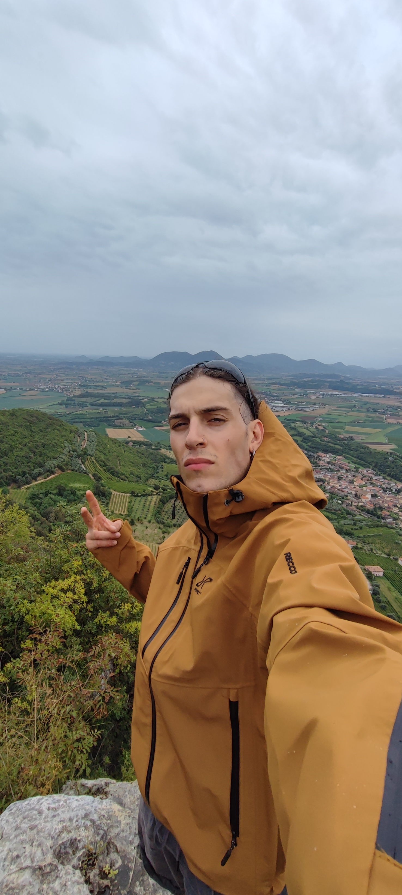

Portfolio.

Summary
- I'm a new aspiring web developer.
I'm learning everything about it, from front-end to back-end and I would like to start a career in this area.
Education
- Mechatronic Technical Institute "Umberto Masotto" Vote:71/100
- ITS Digital Academy "Mario Volpato" WEB DEVELOPER FULL STACK, In progress...
Work Experience
- Head Waiter: Waiter, Bartender, Kitchen Helper
- Cellarman: Seasonal work as a worker in wine production.
- Electronical Intern: Intern cabler and maintenance technician in the industrial automation sector.
Skills
- Head Waiter: Customer Satisfaction · Customer Support · Customer Knowledge · Sales · Customer RelationsSkills
- Electronical Intern: Problem solving · Process improvement · Project planning · Wiring · SolidWorks · Customer relations · Communication · Team spirit · Independence
- ITS DIGITAL ACADEMY:
- Front-End: Html,Css,Js,Bootsrap,Angular,React
- Back-End: MySQL,Php,Java,.NET,Phyton
Contact Me
Hobby